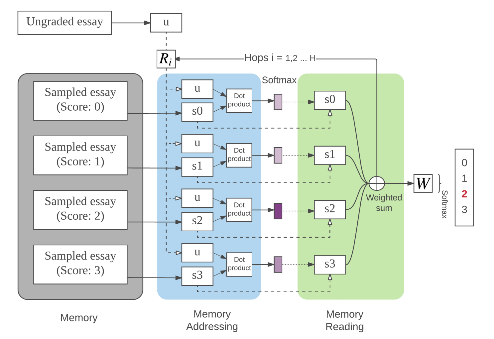
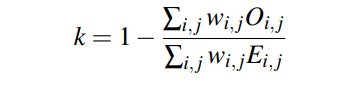

这篇文章以介绍论文《A Memory-Augmented Neural Model for Automated Grading》为主, 后面会进行keras的代码实践。所以文字内容上很多都是翻译自这篇论文。
论文的主要内容是提出了使用内存神经网络进行作文自动化评分。我们假设每个评分等级都有足够的样本,
这些样本可以被用来给相似的作文打分。对于每个可能的评分，
选定部分评分相同的学生作文作为标准。
这些被选定的作文代表了评分标准，并存储在存储器组件中, 也就是我们说的”内存(Memory)”。
我们的模型会根据被评分的作文赋予标准作文不同的权重。本论文使用了”Kaggle的（ASAP）数据集”。结果表明我们的模型在8个作文集自动打分中，有7个是最先进的。
模型结构

我们的模型的图示在上图中给出，模型的灵感来自于参考文献[4] 在”问答题”使用的内存模型。我们的模型由四层组成：输入表示层(input representation)，内存寻址层(memory addressing)，内存读取层(memory reading)和输出层。
- 输入表示层: 将学生作文用向量表示
- 内存寻址层: 将”标准作文”加载进内存, 根据输入的作文, 计算不同的标准作文的权重
- 内存读取层: 根据权重计算”标准作文”的加权之和
- 输出层: 做出预测
数学模型
输入层
假设$x$表示学生的作文, 即$x=\{ x_1, x_2, ..., x_n \}$, $n$代表作文的总词数, $x_i$是one-hot向量。假设所有词的词向量都保存在矩阵$W$中, 那么$W \in R^{d \times V}$, 其中$d$表示词向量维度, $V$表示数据集词种数。 词向量$w_i=Wx_i$。
我们使用PE(position encoding)方法来将表征篇章向量, 即:
计算得到篇章向量$m$:
$$
m_i = \sum_j l_j \cdot Wx_{ij}
$$
向量$l_j$的每个元素的计算公式是:
$$
l_{kj} = (1− j/J)−(k/d) (1−2 j/J)
$$
内存寻址
所有的作文都转换成了向量$m_i$之后, 我们可以筛选出标准作文, 存入内存。 我们为每一个评分等级选择几篇作文作为标准, 我们可以让专家挑选作文, 但是本篇文章使用的是随机的方法。假设我们总共挑选了$h$篇作文, 得到词向量$\{ m_1,m_2,...,m_h \}$, 用x代表即将被评分的作文, 我们可以计算得到所有标准作为的权重向量$p$, 其中的每个元素计算方式是:
$$
p_i = Softmax(x A^T \cdot m_i B^T)
$$
内存读取
得到了内存的权重之后, 就可以计算各个内存的加权之和:
$$
o = \sum_i p_i m_i C^T
$$
多层hops
我不知道hop应该翻译成什么, 它的概念类似于神经网络中的layer的概念, 但是因为在这篇文章中layer已经被使用, 所以我们不能把hop称作”层”。
它实际上就是把内存寻址和内存读取这两层组合起来叫做一个hop, 使用多个hop可以提高模型的效果。
一个hop结束后得到向量o, 假如引入向量$u=xA^T$, 每一个hop都是对u的更新:
$$
u_2 = Relu(R_1(u_1+o))
$$
输出层
假设我们的模型有H个hop, 那么$u_H$就表示最后一hop更新后的u, 那么我们就可以预测各个评分等级的概率$s$:
$$
\hat s = Softmax(u_h W + b)
$$
评价指标
使用QWK(Quadratic weighted Kappa)作为模型效果的评价指标。

基线
- Enhanced AI Scoring Engine (EASE): 开源的AES系统, 它几乎是所有的开源系统中QWK得分最高的
- a simple multi-layer forward neural networks (FNN) model
- LSTM
结果

参考文献
Hongbo Chen and Ben He. 2013. Automated Essay
Scoring by Maximizing Human-Machine Agreement. In
EMNLP.Jeffrey Pennington, Richard Socher, and Christopher D
Manning. 2014. Glove: Global Vectors for Word
Representation. In EMNLP, Vol. 14. 1532–1543.Peter Phandi, Kian Ming Adam Chai, and Hwee Tou Ng. 2015. Flexible Domain Adaptation for Automated Essay
Scoring Using Correlated Linear Regression. In EMNLP.Sainbayar Sukhbaatar, Arthur Szlam, Jason Weston, and
Rob Fergus. 2015. End-To-End Memory Networks. In
Advances in Neural Information Processing Systems 28,
C Cortes, N D Lawrence, D D Lee, M Sugiyama, and
R Garnett (Eds.). Curran Associates, Inc., 2440–2448.Kaveh Taghipour and Hwee Tou Ng. 2016. A Neural
Approach to Automated Essay Scoring. In EMNLP.Jason Weston, Sumit Chopra, and Antoine Bordes. 2014.
Memory Networks. CoRR abs/1410.3916 (2014).
代码实践
在之前的文章里我写过关于内存模型的tensorflow教程, 传送门: https://mlln.cn/2018/07/05/Tensorflow%E9%80%90%E6%AD%A5%E5%AE%9E%E7%8E%B0%E8%AE%B0%E5%BF%86%E7%BD%91%E7%BB%9C(Memory%20networks)%E7%AC%AC%E4%B8%80%E9%83%A8%E5%88%86/
有时间的时候我会补充keras的代码。
注意
本文由jupyter notebook转换而来, 您可以在这里下载notebook理论和实践.ipynb)
有问题可以直接在下方留言
或者给我发邮件675495787[at]qq.com
请记住我的网址: mlln.cn 或者 jupyter.cn